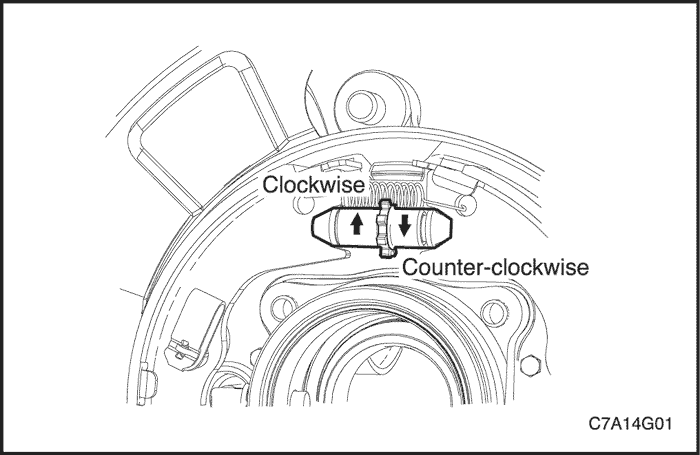
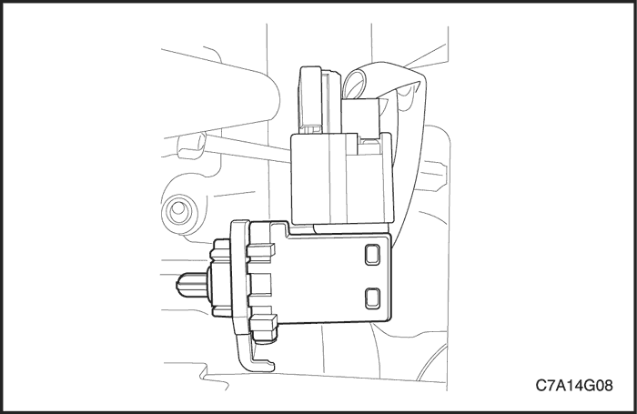
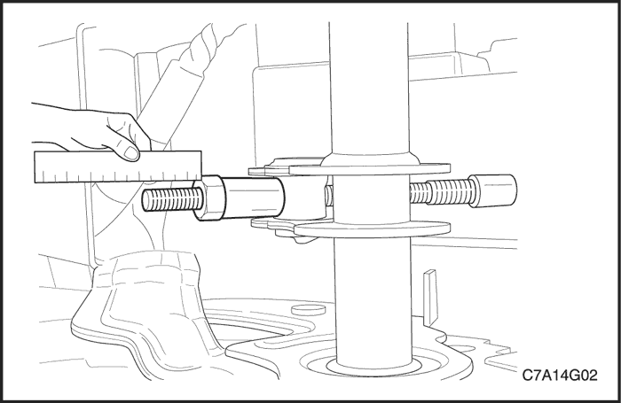
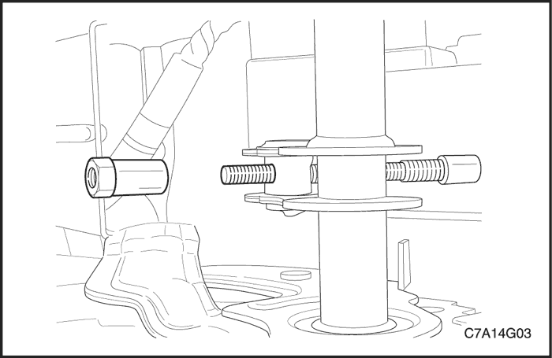
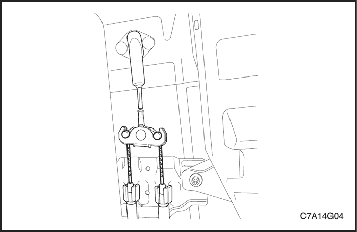
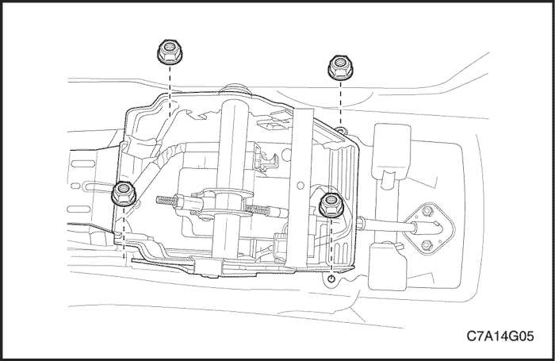
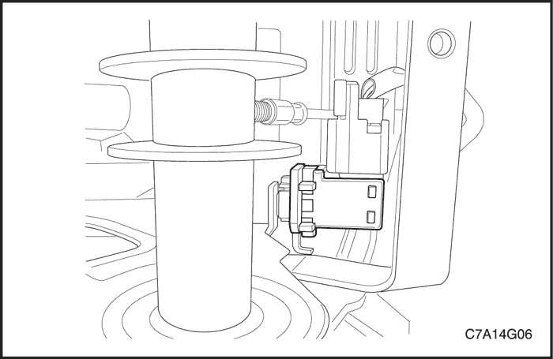
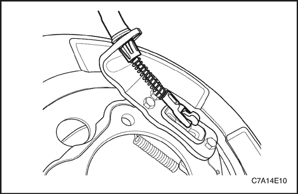
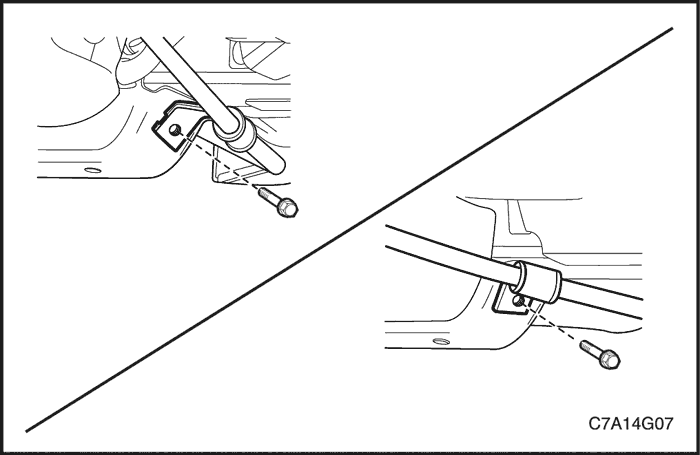

SECCIÓN 4G
FRENO DE ESTACIONAMIENTO
ESPECIFICACIONES
Especificaciones de apriete de la sujeción
| Aplicación | N•m | Árbol de transmisión izquierdo | Articulación |
| Tornillos de unión del soporte del cable del freno de estacionamiento a los bajos de la carrocería | 23 | 17 | - |
| Tornillos que unen el conjunto de la palanca del freno de estacionamiento al panel de la carrocería | 23 | 17 | - |
MANTENIMIENTO Y REPARACIÓN
servicio con vehículo en marcha



Ajuste del freno de estacionamiento - Frenos de disco traseros
procedimiento de ajuste
- Suelte el freno de estacionamiento.
- Levante y apoye el vehículo adecuadamente.
- Desmonte las ruedas traseras. Consulte la Sección 2E, Neumáticos y ruedas.
- Desmonte la pinza, el disco y el buje. Consulte la Sección 4E, Frenos traseros.
- Desconecte el cable del freno de estacionamiento de la ranura de la placa de apoyo.
- Inspeccione y sustituya cualquier pieza cuya resistencia o calidad esté en duda a causa de la decoloración por el calor o las tensiones.
- Ajuste el conjunto de la zapata girando la tuerca de ajuste en el sentido de las agujas del reloj para aumentar el diámetro, o en el sentido contrario para disminuir el diámetro.
- Monte los conjuntos de la pinza y disco del freno. Consulte la Sección 4E, Frenos traseros.
- Monte las ruedas traseras. Consulte la Sección 2E, Neumáticos y ruedas.
- Monte el cable del freno de estacionamiento en la ranura de la placa de apoyo.
- En la cabina del vehículo, tire de la empuñadura del freno de estacionamiento y pare cuando oiga dos clics.
- Gire la rueda trasera con la mano hasta que la rueda empiece a ofrecer resistencia.
- Suelte el freno de estacionamiento.
- Gire la rueda trasera con la mano para comprobar el arrastre y vuelva a ajustar el cable si fuera necesario.
- Repita el mismo proceso con la otra rueda trasera y baje el vehículo.

Interruptor de la luz de aviso del freno de estacionamiento
Procedimiento de desmontaje
- Retire la cubierta de la consola del cambio de marchas/freno de estacionamiento. Consulte la sección 9G, Guarnecido interior.
- Desmonte el interruptor de la luz de aviso del freno de estacionamiento del conjunto de la palanca del freno de estacionamiento y desenchufe el conector.
procedimiento de montaje
- Coloque el interruptor de la luz de aviso del freno de estacionamiento y enchufe el conector.
- Coloque la cubierta de la consola del cambio de marchas/freno de estacionamiento. Consulte la sección 9G, Guarnecido interior.

Palanca de freno de estacionamiento
Procedimiento de desmontaje
- Suelte el freno de estacionamiento.
- Retire la cubierta de la consola del cambio de marchas/freno de estacionamiento. Consulte la sección 9G, Guarnecido interior.
- Mida la longitud de rosca entre el extremo del tirante y la tuerca hexagonal.

- Quite la tuerca de ajuste del freno de estacionamiento del cáncamo del conjunto de la palanca del freno de estacionamiento.

- Levante y apoye el vehículo adecuadamente.
- Retire los extremos del cable del freno de estacionamiento de la varilla de dicho cable.

- Quite los tornillos que sujetan el conjunto de la palanca del freno de estacionamiento al panel de la carrocería.

- Desmonte el interruptor del freno de estacionamiento del conjunto de la palanca del freno de estacionamiento.
- Desmonte la palanca del freno de estacionamiento.
Aviso: El interruptor de la luz de aviso del freno de estacionamiento debe sustituirse si la luz de aviso de freno del panel de instrumentos no se enciende al aplicar el freno de estacionamiento con la llave de contacto en posición ON.
procedimiento de montaje
- Monte el interruptor de la luz de aviso del freno de estacionamiento en el conjunto de la palanca del freno de estacionamiento.
- Coloque el conjunto de la palanca del freno de estacionamiento en el panel de la carrocería con los tornillos.
Apretar
Apriete los tornillos del conjunto de la palanca del freno de estacionamiento hasta 23 N•m (17 lb-pie).
- Coloque los extremos del cable del freno de estacionamiento en la varilla de dicho cable.
- Coloque la tuerca de ajuste del freno de estacionamiento en el cáncamo del conjunto de la palanca de dicho freno y no olvide comprobar el ajuste del freno de estacionamiento consultando la medición de la tuerca de ajuste del desmontaje original que se tomó en el procedimiento de desmontaje. Consulte el apartado "Ajuste del freno de estacionamiento - Frenos de disco traseros" de esta sección.
- Coloque la cubierta de la consola del cambio de marchas/freno de estacionamiento. Consulte la sección 9G, Guarnecido interior.
Cable de freno de estacionamiento
Procedimiento de desmontaje
- Suelte el freno de estacionamiento.
- Retire la cubierta de la consola del cambio de marchas/freno de estacionamiento. Consulte la sección 9G, Guarnecido interior.
- Mida la longitud de rosca entre el extremo del tirante y la tuerca hexagonal y quite dicha tuerca.
- Retire los extremos del cable del freno de estacionamiento de la varilla de dicho cable y desmonte la varilla.

- Desconecte el cable del freno de estacionamiento del conjunto de la placa de apoyo trasera. Consulte la Sección 4E, Frenos traseros.

- Quite los tornillos que unen el cable del freno de estacionamiento a los bajos de la carrocería.
- Desmonte el cable del freno de estacionamiento.
procedimiento de montaje
- Coloque el cable del freno de estacionamiento en el conjunto de la placa de apoyo trasera. Consulte la Sección 4E, Frenos traseros.
- Coloque los tornillos que unen el soporte del cable del freno de estacionamiento a los bajos de la carrocería.
Apretar
Apriete los tornillos que unen el soporte del cable del freno de estacionamiento a los bajos de la carrocería del vehículo hasta 23 N•m (17 lb-pie).
- Monte la varilla del cable del freno de estacionamiento y coloque los extremos del cable en la varilla.
- Coloque la tuerca de ajuste del freno de estacionamiento en el cáncamo del conjunto de la palanca de dicho freno y no olvide comprobar el ajuste del freno de estacionamiento consultando la medición de la tuerca de ajuste del desmontaje original que se tomó en el procedimiento de desmontaje. Consulte el apartado "Ajuste del freno de estacionamiento - Frenos de disco traseros" de esta sección.
- Coloque la cubierta de la consola del cambio de marchas/freno de estacionamiento. Consulte la sección 9G, Guarnecido interior.
DESCRIPCIÓN GENERAL Y FUNCIONAMIENTO DEL SISTEMA
Freno de estacionamiento
Este sistema de frenos emplea una luz de aviso de los frenos situada en el cuadro del panel de instrumentos.
La luz de los frenos se encenderá en las condiciones siguientes:
- El freno de estacionamiento está echado y la llave de contacto está en la posición ON. La luz se apagará cuando se suelte el freno de estacionamiento.
- El nivel del líquido de frenos se encuentra por debajo de la marca de "mínimo" del depósito del cilindro maestro. La luz se apagará cuando el nivel del líquido de frenos rebase dicha marca de mínimo.
- Como comprobación del circuito de esta luz, la luz de freno se encenderá débilmente cuando se gire la llave de contacto a la posición ON, aunque el freno de estacionamiento esté suelto y el nivel del líquido de frenos esté por encima de la marca de "mínimo". La luz se apagará cuando se ponga en marcha el motor.
Cuando se pone el freno con firmeza, el freno de estacionamiento debe sujetar el vehículo, dejando una amplia carrera de pedal. Compruebe si hay cables deshilachados, óxido, etc., o cualquier otro problema que pudiera impedir la libertad del movimiento presente (o futura) del conjunto de la palanca del freno de estacionamiento.